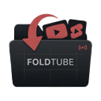

FoldTubePrivacy Policy
Last updated: November 24, 2026
FoldTube is built to keep what you watch private. In short: your list stays in your browser, and FoldTube has no servers, accounts, ads, analytics, cookies or tracking. Nothing is ever sent to the developer.
What FoldTube stores, and where
Everything FoldTube stores lives only in your browser's local storage, on your device. It's never synced, never sent to the developer, and the developer has no way to see it. This includes:
- The videos you save: the title, channel, length, link and thumbnail of each video, the date you saved it, and where you stopped watching.
- Videos you open or remove: they move to History, so you can restore them. After 90 days FoldTube deletes them.
- Your settings: theme, auto-collapse, and your YouTube API key if you choose to add one.
- Your open YouTube video tabs: a short list of the YouTube videos open in your browser, so they can still be saved if the browser quits while auto-collapse is on. A tab drops off the list when you close it or leave YouTube.
What FoldTube sends, and to whom
FoldTube has no backend of its own. Any network requests go directly from your browser to YouTube or Google:
- YouTube (for missing channel names): if a saved video has no channel name (for example, it was saved from a sleeping tab or from a link), FoldTube fetches it from YouTube using only the video's ID. These requests carry no cookies and aren't linked to your YouTube or Google account.
- Google's YouTube Data API (optional): only if you add your own API key, FoldTube sends video IDs and your key directly to Google to fetch missing channel names and lengths. You can remove your key at any time in Settings → Advanced.
Opening a saved video loads YouTube in a normal browser tab, where YouTube's own privacy policy applies.
No selling, sharing or other use: your data never passes through the developer's servers, because there are none. It's never collected, sold or shared, and never used for anything outside the features described above.
What FoldTube can access (browser permissions)
- YouTube (youtube.com): used only to find your open YouTube tabs, and to read a video's title, channel and length when you fold it.
- Other websites: only when you right-click a link to a YouTube video and choose "Save to FoldTube", to briefly show a "Saved" confirmation on that page. FoldTube reads nothing from other websites.
- Browser storage: used to save your video list and preferences on your device.
- Notifications: used only to confirm how many tabs were folded.
Deleting your data
You're in full control of your data. Inside FoldTube you can remove videos from your list, delete them forever from History, clear all history, or remove your API key at any time. After you delete a video forever, FoldTube remembers only its ID, so it knows the video was deleted, and forgets that after 90 days. Uninstalling FoldTube erases everything it stored from your browser.
Changes to this policy
If a future update ever changes how FoldTube handles data, for example if optional sync between devices is added, this policy will be updated beforehand, with a new date at the top.
Contact
Questions about privacy: foldtube@osumapps.com